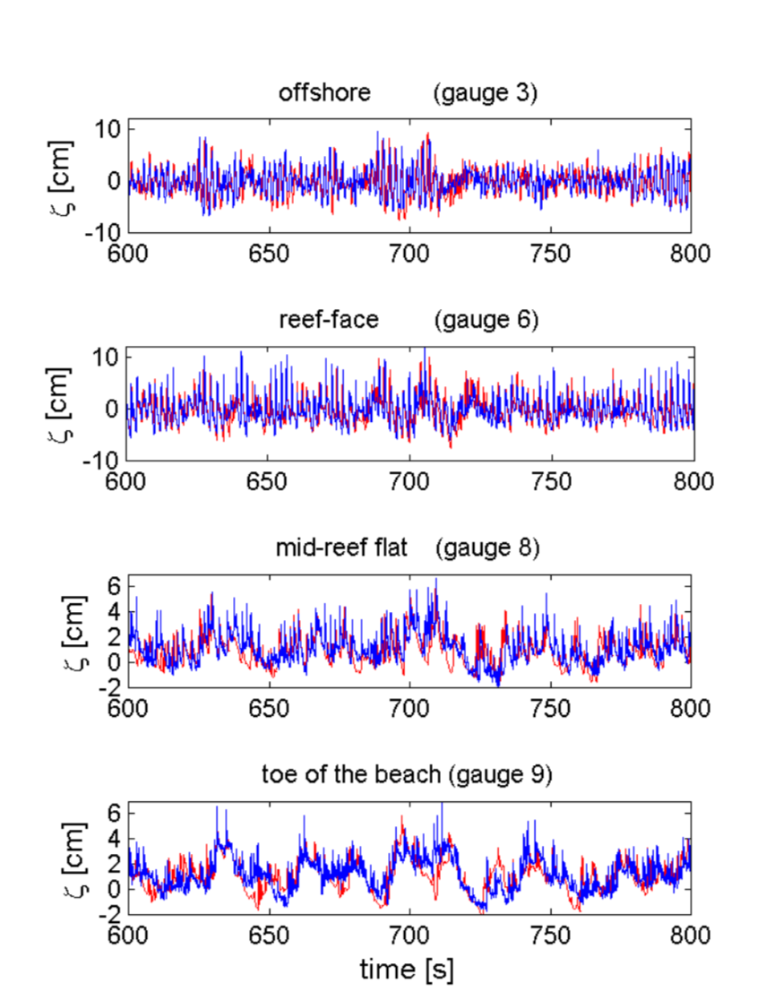
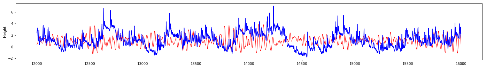

Pada tahun 2002 Marcel Zijlema(#Zijlema_2012###) melakukan pemodelan terhadap transformasi gelombang dengan menggunakan swash (#zijlema###). Hasil dari pemodelan Zijlema dapat di gambar ;SPMquot;Hasil dari model SWASH;SPMquot; #fig:percobaan_zijlema#1894>.
<#3865#>Gambar<#3865#> 10:
<#3867#>Hasil dari model Zijlema. Perbandingan observasi dan prediksi. Biru adalah observasi dan merah adalah prediksi.<#3867#>

|
Bila dibandingkan dengan hasil pengujian yang sama dengan model yang dibuat pada TA ini, hasil pemodelan Zijlema (#Zijlema_2012###) jauh lebih baik. Hal ini dikarenakan pada model #tex2html_wrap_inline3870#� yang dipakai di TA ini tidak menggunakan parameter lain seperti nilai sensor pada #tex2html_wrap_inline3872#� (waktu sebelumnya). Sedangkan feature penting untuk mencari perubahan bentuk dari waktu ke waktu (rates of change). Dimana nilai saat ini, dipengaruhi oleh nilai sebelumnya. Ini adalah kelemahan dari feedforward #tex2html_wrap_inline3874#�. Feedforward #tex2html_wrap_inline3876#� tidak mengingat hasil sebelumnya untuk digunakan dalam komputasi output. Hal ini dapat dilihat pada
<#3877#>Gambar<#3877#> 11:
<#3879#>Hasil dari prediksi MLP. Merah adalah hasil prediksi dan biru adalah target.<#3879#>

|